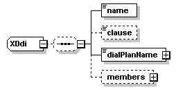
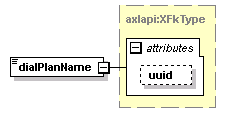
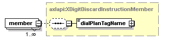

| diagram |  |
| namespace | http://www.cisco.com/AXL/API/10.5 |
| children | name clause dialPlanName members |
| source | <xsd:complexType name="XDdi"> <xsd:sequence minOccurs="0"> <xsd:element name="name" type="axlapi:String50" nillable="false" minOccurs="1" maxOccurs="1"/> <xsd:element name="clause" type="axlapi:String1024" nillable="true" minOccurs="0" maxOccurs="1"/> <xsd:element name="dialPlanName" type="axlapi:XFkType" nillable="false" minOccurs="1" maxOccurs="1"/> <xsd:element name="members" minOccurs="0" maxOccurs="1"> <xsd:complexType> <xsd:complexContent> <xsd:extension base="axlapi:XCommonMembersExtension"> <xsd:sequence minOccurs="0"> <xsd:element name="member" type="axlapi:XDigitDiscardInstructionMember" minOccurs="1" maxOccurs="unbounded"/> </xsd:sequence> </xsd:extension> </xsd:complexContent> </xsd:complexType> </xsd:element> </xsd:sequence> </xsd:complexType> |
| diagram | |||||||
| type | axlapi:String50 | ||||||
| properties |
|
||||||
| facets |
|
||||||
| source | <xsd:element name="name" type="axlapi:String50" nillable="false" minOccurs="1" maxOccurs="1"/> |
| diagram | |||||||||
| type | axlapi:String1024 | ||||||||
| properties |
|
||||||||
| facets |
|
||||||||
| source | <xsd:element name="clause" type="axlapi:String1024" nillable="true" minOccurs="0" maxOccurs="1"/> |
| diagram |  | ||||||||||||
| type | axlapi:XFkType | ||||||||||||
| properties |
|
||||||||||||
| attributes |
|
||||||||||||
| source | <xsd:element name="dialPlanName" type="axlapi:XFkType" nillable="false" minOccurs="1" maxOccurs="1"/> |
| diagram | |||||||
| type | extension of axlapi:XCommonMembersExtension | ||||||
| properties |
|
||||||
| children | member | ||||||
| source | <xsd:element name="members" minOccurs="0" maxOccurs="1"> <xsd:complexType> <xsd:complexContent> <xsd:extension base="axlapi:XCommonMembersExtension"> <xsd:sequence minOccurs="0"> <xsd:element name="member" type="axlapi:XDigitDiscardInstructionMember" minOccurs="1" maxOccurs="unbounded"/> </xsd:sequence> </xsd:extension> </xsd:complexContent> </xsd:complexType> </xsd:element> |
| diagram |  | ||||||
| type | axlapi:XDigitDiscardInstructionMember | ||||||
| properties |
|
||||||
| children | dialPlanTagName | ||||||
| source | <xsd:element name="member" type="axlapi:XDigitDiscardInstructionMember" minOccurs="1" maxOccurs="unbounded"/> |